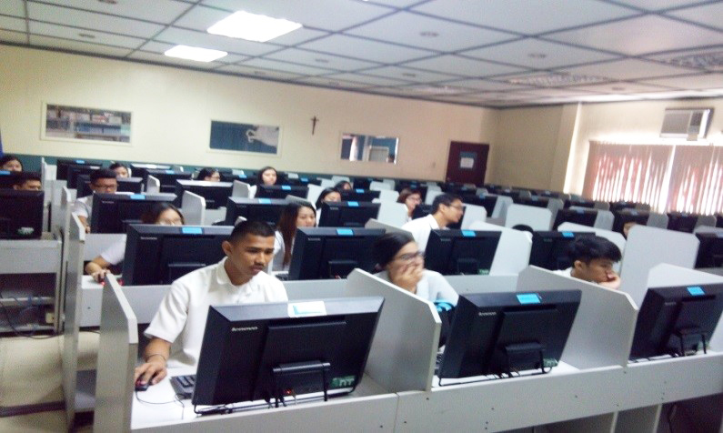
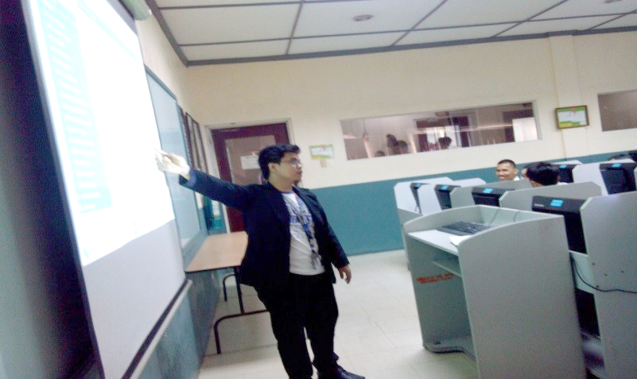
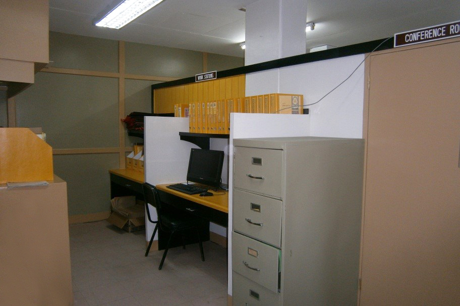

Program Overview
The Bachelor of Science in Customs Administration (BSCA) is a
four-year college degree course for individuals who wish to pursue a career in the customs brokerage or in the field of transportation and supply chain management. The Customs Administration curriculum provides students with the theoretical education and initial training on the practical application of the tariff and customs laws, policies and guidelines that are being implemented by the different government agencies that are involved in the import and export industries. Students will also learn various laws, regulations and procedures and their implications for taxation. The business-oriented syllabus includes classroom activities and on-the-job training with customs brokerage companies or with the Bureau of Customs.



Recommended Senior High School Strand
Students who want to pursue a degree in Customs Administration are encouraged to take the
Accountancy, Business and Management (ABM) strand. This strand provides the basic concepts of business and financial management, and corporate operations which will be helpful in their college journey.
Subjects and Curriculum
- ~ Principles of Customs Administration
- ~ The relationship of Customs to International Trade
- ~ Cargo Handling, Port Operation, and Law on Common Carriers
- ~ Freight Forwarding and Non-Vessel Operating Common Carriers
- ~ General Warehousing
- ~ Customs Administrative and Judicial Proceedings
- ~ Forms, Documentations, Customs Procedures and Practices
- ~ Custom Brokers Ethics
Admission Requirements
Qualifications
- The student must be a high school graduate. However, if they were not able to graduate high school, they may opt to take the Alternative Learning System (ALS) and pass the Philippine Educational Placement Test (PEPT) to qualify for college; the availability of courses for PEPT passers depend on the university.
- The students must pass the College Admissions Test of the university.
Basic Requirements
- Form 138 - High School Report Card (Original and Photocopy)
- Recommendation letter from High school principal and guidance counselor
- Most recent medical and dental health record
- Copy of NSO Certified birth certificate
- Certificate of Good moral character
- Copy of honorable dismissal
- Copy of high school diploma
- (1) Latest 2”x2” ID Picture
Program Outcome
Graduates of Customs Administration are expected to be able to:
- Handle preparation of custom duties and taxes
- Give advice on tariff and customs laws, rules and regulations related matters
- Process the importation and exportation of documents required under the Tariff and Customs Code of the Philippines (TCCP) for matters concerning the Bureau of Customs or any other government agencie
On-The-Job Training/Internship
During the fourth year of the program, students are required to attend an On the Job Training (OJT) in various logistic companies.
Students are given the opportunity to apply their knowledge and skills in an actual work setting. Usually, universities require them to submit a written report on their tasks, learning experiences, and hours rendered. Their work performance will also be evaluated by their immediate managers and will be submitted to their respective OJT coordinator. The number of hours required may differ in each university.
Board Exam
To become a Licensed Customs Broker in the Philippines, a graduate of BS in Customer Administration needs to pass the Customs Brokers Licensure Examination. The examination is conducted by the Board Examiners for Custom Brokers under the supervision of the Professional Regulations Commission (PRC). It is scheduled once a year, usually in the month of October.
Career Opportunities
Graduates of BS in Customs Administration may pursue a career path in various companies that specialize in logistics, shipment, and distribution. They may also apply to the Bureau of Customs if they are interested in working in the government. They may apply for roles such as a customs declarant, customs representative, freight forwarder, customs processor, air or sea cargo handling documentation clerk, or financial institutions staff.